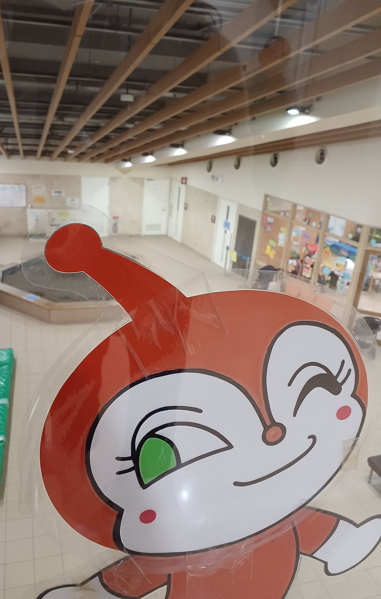

こどもの国には、
『すべての子供たちの楽しい思い出の真ん中に「こどもの国」がありますように』
という願いが込められています。
戸田市立児童センターこどもの国は安全・安心で、すべての人を温かく迎える施設です。
地域との絆を大切にし、地域と共に健全育成の拠点としての活動を創出しています。
利用対象
児童センターの施設利用は、児童（0～18才）及び、保護者を対象とします。
小学校に入る前（就学前）のお子様には、必ず保護者の付き添いが必要となります。
12月の休館日は20日と31日です。 毎月第3水曜日は休館日です。年末年始（12/31～1/3）は休館日です。詳しくは公式ホームページへ！
| イベント内容 | 日程 |
|---|---|
| ボールであそぼう | 毎週月曜日 |
| のりものであそぼう | 毎週火曜日 |
| おりがみであそぼう | 毎週水曜日 |
| よくみてかんがえて | 毎週金曜日 |
| 12月のイベント | 日程 |
| クリスマス・お正月をかざろう | 12/3（日）・12/16（土） |
| ポンダンス！！ | 12/9（土） |
| 大学生とあそぼう | 12/9（土） |
| こどもの国地域イルミネーション | 12/2（土）〜 2/14（水） |